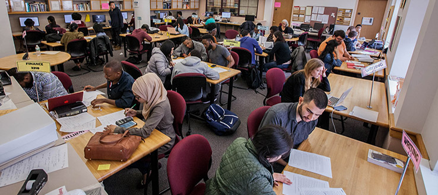

The Learning Center offers Brooklyn College students free peer tutoring in courses across the curriculum in a comfortable, supportive environment well-stocked with computers and reference materials for student use. The Learning Center is open every weekday, some evenings, and weekends.
Students working on writing assignments can get help with every stage of the writing process. Those who wish to work on their writing are encouraged to schedule an appointment for regular weekly meetings or an individual session. All writing sessions are conducted on a one-on-one basis and last for one hour. For all other subjects unrelated to writing, students may drop in without an appointment during our advertised days and times. Sessions are conducted in small groups or one-on-one depending on availability.
The best time to visit the center is early in the term and repeatedly thereafter. Historically, many students seek assistance too late into the semester to maximize our resources and support fully. We encourage students to stop by for a tour, become familiar with our schedules, and meet with some of our tutors during the first or second week of classes for a consultation. It goes without saying that seeking the guidance of a tutor 20 minutes before a final exam or the day that a paper is due is not a recommended strategy for success.
What's particularly interesting about the Learning Center is that while many students seek tutoring to avoid failing a class, just as many top students come to the center to turn a grade of B into an A.
